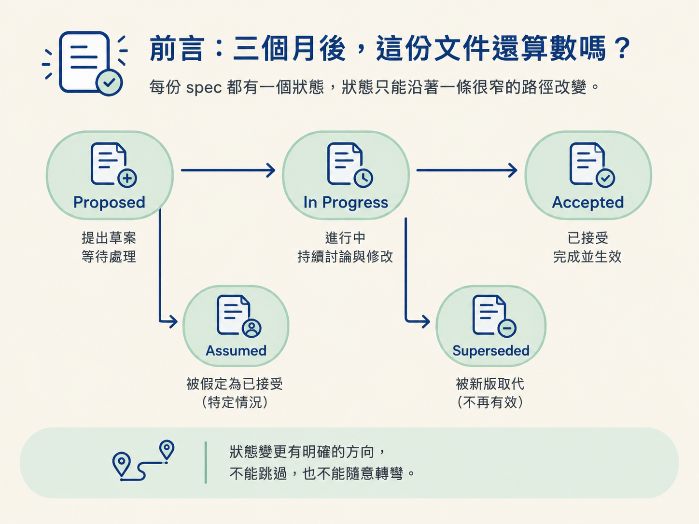
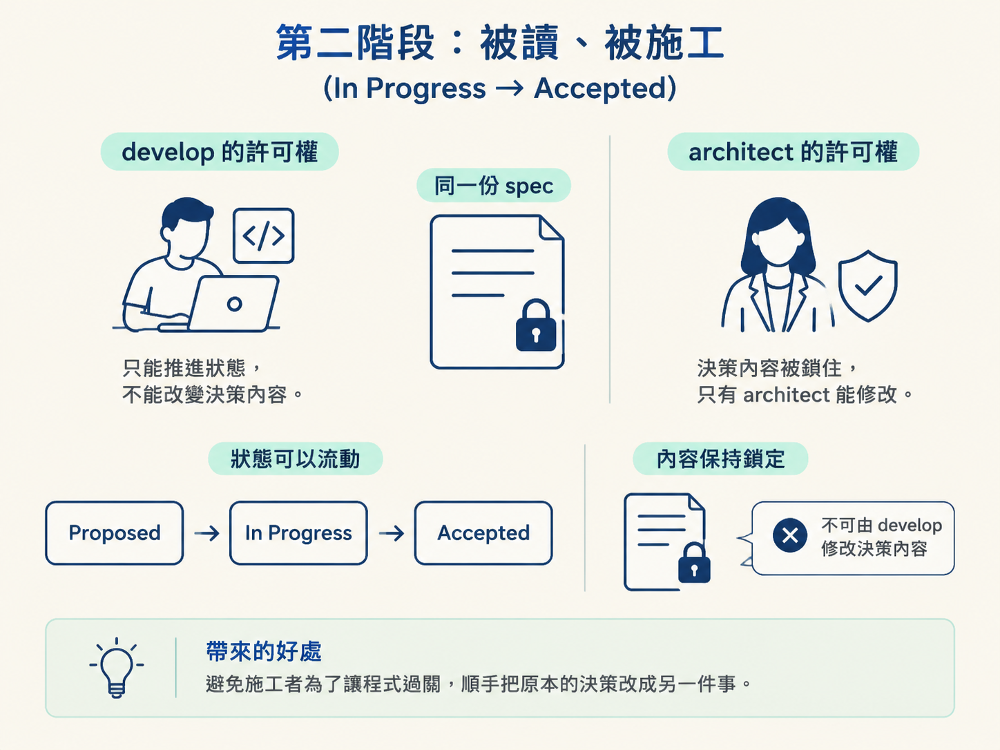
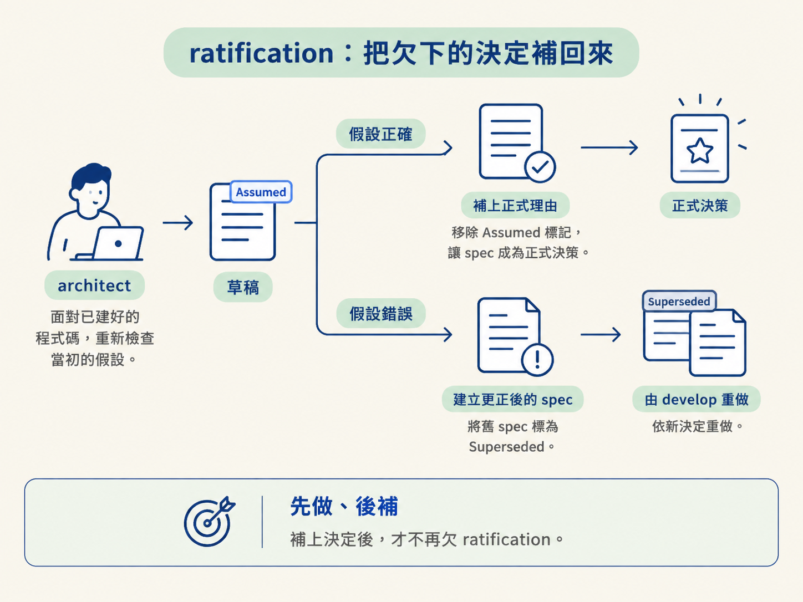

看完這一節，你應該能畫出一份 spec 的完整生命週期：Proposed → In Progress → Accepted，以及特殊狀態 Assumed 和 Superseded。你也要能說清楚，為什麼 Assumed 最後一定需要一次 ratification（追認）。
上一節把四種知識載體分開了。其中，spec 最需要清楚的規矩。想像你三個月後回到一個功能，資料夾裡躺著一份標題為「改用 OAuth 登入」的 spec。你很快會遇到三個問題：這個決定已經拍板了，還只是提議？程式已經照著它完成，還是根本沒開始？它到了今天還有效嗎？
如果文件沒有直接回答這些問題，你只能靠記憶或猜測。但這套流程正是要把記憶和猜測排除在外。因此，每份 spec 都有一個狀態，而且狀態只能沿著一條很窄的路徑改變。接下來就把這個狀態機攤開來看。

一份 spec 是「一個真實決定」的書面紀錄，例如要採用哪種登入方式，或資料要長成什麼形狀。它同時扮演兩個角色：
因此，spec 有兩群讀者。負責 build 的 develop 只需要讀施工所需的部分：需求與驗收條件、決策內容、設計，以及有順序的施工計畫。它不必重新閱讀整段推論過程，因為那是決策歷史，不是施工輸入。
相反地，當人需要理解一個決定為什麼成立，就要回頭讀它的來龍去脈。
當 architect 做出一個真實決定，這個決定就會被寫成一份 spec。一般情況下，它出生時的狀態是 Proposed。
這裡的 Proposed 不是「還在考慮」。它代表決定已經成立，但施工尚未開始。可以把它想成施工圖已經核定，只是工地還沒動工。
有一個例外：如果這份 spec 是用來記錄一件已經上線的事，它出生時就直接是 Accepted。因為它記錄的是已經發生的事實，不是接下來要執行的計畫。
當 build 開始，develop 會載入 spec。它只讀施工需要的部分，讀完後就依照內容實作。
施工開始時，develop 會把狀態從 Proposed 推進到 In Progress。這代表決定已經存在，而且施工正在進行。等功能完成並通過驗證後，develop 再把狀態從 In Progress 推進到 Accepted。
但 develop 能改的東西非常有限：它只能修改那一行狀態，永遠不能編輯決策內容。決策本身只有 architect 能修改。
這條界線很重要。它把「誰做了決定」和「施工進度到哪裡」分開，避免施工者為了讓程式過關，順手把原本的決策改成另一件事。

如果後來真的要推翻一個決定，正確做法不是讓 develop 直接改寫舊 spec，而是由 architect 重新走一次決定流程。
architect 會建立一份新的 spec，並把舊 spec 標記為 Superseded，同時附上指向新版本的連結。這樣歷史仍然保留下來：你看得到當初為什麼選 A，也看得到後來為什麼改成 B。
否則，舊文件可能被悄悄改寫，最後只剩「現在的答案」，卻找不到決定曾經如何演變。
還有另一種情況：沒有人主動修改 spec，但後來的某個變更讓它悄悄過期了。
這時由 sync 負責把它標記出來，提醒人類重新對齊。它不會假裝這份 spec 仍然有效，也不會直接替人做新的決定。這個標記像一張貼在文件上的便利貼：問題已被發現，但下一步仍要由人處理。
前面的路徑都是「先決定，再施工」。但實務上有時候，工作會先撞上一個尚未被正式決定的選擇，而你又不想因此停工。
例如，develop 遇到一個關鍵問題：要用哪個 provider、資料要採用哪種形狀，或介面應該怎麼設計，但目前沒有對應的 spec。這時，如果你只告訴它「照做就對了」，它不應該默默猜一個答案，再讓猜測混進正式程式碼裡。
它會先建立一份小型 spec，狀態標成 Assumed，並記下三件事：
這是 develop 唯一被允許建立的 spec，而且只能建立成 Assumed。這個狀態的意思很直接：「先記下來，但還沒有正式想透。」
因此，被這份 spec 管理的功能會一直帶著「欠 ratification」的標記。不過這個標記不會阻擋工作完成；功能仍然可以標成 done。它是一個站著的提醒，不是一道牆。
要清掉「欠 ratification」的標記，就必須再讓 architect 介入一次。這次 architect 面對的不是抽象問題，而是已經建好的程式碼，必須重新檢查當初的假設是否成立。
接下來有兩種結果。
Assumed 標記，讓這份 spec 成為正式決策。Superseded，再讓 develop 依照新決定重做。這個補回決定的動作就叫 ratification（追認）。它讓「先做、後補」的 override 可以繼續推進，但不會讓未經思考的決定永遠躲在對話或程式碼裡。

整個生命週期能保持清楚，靠的是兩條擁有權規則。
第一，只有 architect 能寫 spec 的內容，也只有 architect 能清除 Assumed 標記。
第二，只有 develop 能沿著施工生命週期推進狀態列；而 develop 唯一能新建的 spec，就是狀態為 Assumed 的草稿。
單一擁有權的價值，在於多年後回頭看時，文件仍然能回答兩個問題：這個決定是誰負責的？這個狀態又是誰推進的？只要兩者不混在一起，spec 就比較不會被施工需求或臨時對話帶偏。
一份 spec 由 architect 建立，通常出生為 Proposed；如果記錄的是已經上線的事，則直接出生為 Accepted。develop 只讀施工需要的部分，並把狀態從 Proposed 推進到 In Progress，再推進到 Accepted，但永遠不編輯決策內容。決定被推翻時，由 architect 建立新 spec，並把舊 spec 標成 Superseded；決定因後續變更而過期時，則由 sync 標記。若在決定完成前就先開工，develop 可以建立唯一允許的 Assumed 草稿。這會讓功能欠下一次 ratification，但不會阻擋功能完成。
現在，每種狀態都有了清楚的主人與轉移規則。下一節會把整張「誰建立、誰讀、誰能改」的表完整攤開，並說明為什麼單一擁有者紀律，是讓這些檔案長期可信的關鍵。